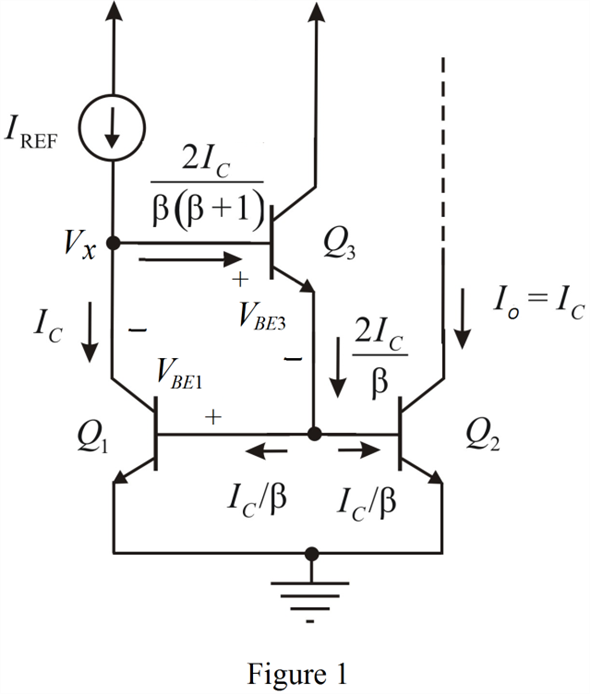
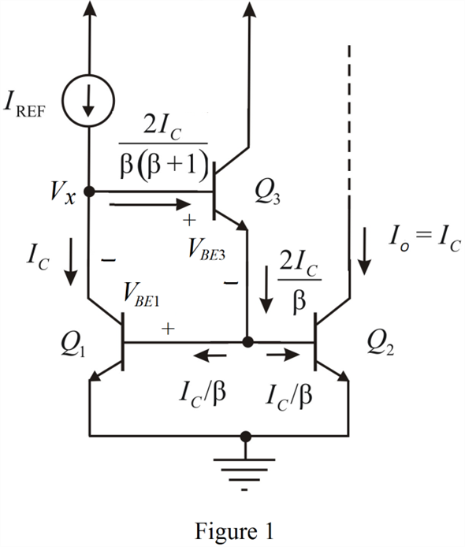

Refer to Figure 7.33 in the textbook for a current mirror with base current compensation circuit diagram.
The modified circuit to calculate the voltage at the point  is shown in Figure 1.
is shown in Figure 1.

Refer to Figure 7.33 in the textbook for a current mirror with base current compensation circuit diagram.
The modified circuit to calculate the voltage at the point is shown in Figure 1.

Apply the Kirchhoff’s voltage law in between the transistor to calculate the voltage at node,  .
.
Substitute 0.7 V for base to emitter voltage.
Hence, the voltage at node  is, .
is, .
If reference current is changed to , the ratio of collector currents of transistors  and
and  is,
is,
Simplify further.

Calculate the change in voltage at node,  .
.
Hence, the change in voltage at node  is, .
is, .
The value of obtained in both the cases is,
In first case , since , so,
Therefore, the value of  is, .
is, .
In second case , since , so,
Therefore, the value of  is, .
is, .
Substitute  for
for  and 200 for
and 200 for  .
.
Here, the actual value of output current is,
Percentage difference between actual and ideal value of output current is,
Therefore, the percentage difference between actual and ideal value of output current is, .
The lowest voltage at the output for which proper current-source operation is maintained is,  . Since transistor
. Since transistor  saturation value is 0.3 V.
saturation value is 0.3 V.